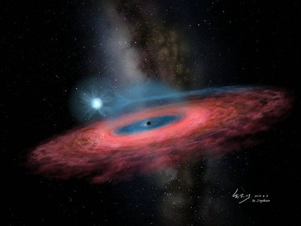

Scientists have discovered a new Chernau hole, which is 70 times more massive than the Sun. Previously, scientists believed that the mass of a stellar black hole could not be 30 times the mass of the Sun. So what is it? A new discovery forcing scientists to rethink their models of black hole formation, or an unknown error in the study?